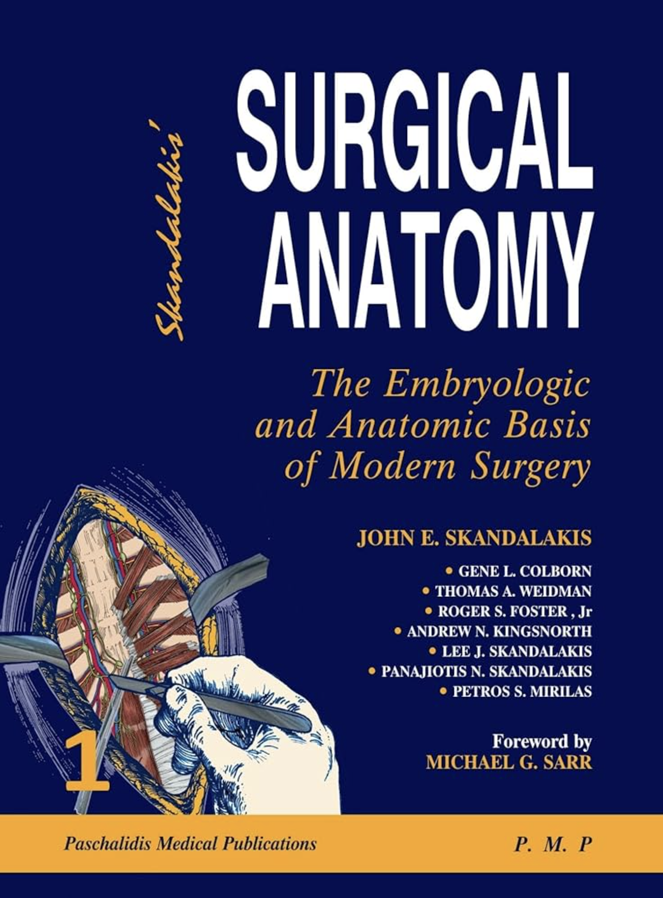

Books and Digital Tools To Read During Surgery Residency
A comprehensive guide to the must-have textbooks, atlases, and digital platforms for every level of surgical training. Strategize your study journey from Intern year to Fellowship.
I often interact with a number of residents and students who are about to enter surgery residency or are first-year PGs. “How do I study during residency?” is a question that is on every resident’s mind.
Surgery residency in the subcontinent is pretty unstructured. In some situations, the residency is a cakewalk with very few duties. In most situations, it is a toxic hellhole. Studying during a tough surgery residency is not easy at all.
The biggest challenge will be your seniors and colleagues who will use all their skills of persuasion to make sure that books remain a distant dream. The hours are long, sleep is a long-lost memory, and seniors don’t hesitate to insult your entire khaandaan. This is the reality of most residencies in India, and it doesn’t make studies any easier.
The medical community doesn't rely on a single "best" book; instead, online discussion boards (like r/Residency, Student Doctor Network, and Residency Advisor) and professional blogs reveal a distinct "tier list" based on your level of training.
In this article, we will detail the precise books and digital tools you need to master during your general surgery residency, categorized by how they are actually used in the hospital.
1. The "Night Before" Prep & Operative Surgery (Visual Atlases)
Reading before every surgery is essential, but often under-emphasized. These are the books you open to memorize the steps, incisions, and room setup before scrubbing in.
.png)
📖 Zollinger's Atlas of Surgical Operations (10th Edition)
Best for: Medical students, Interns, and Junior Residents (PGY 1-2) needing rapid review and step-by-step procedural planning.
The undisputed classic for visual learners. It pairs each procedure across a brilliantly illustrated two-page spread. The left page covers patient prep, anatomy, and instrumentation, while the right page illustrates the operative technique in a legendary "one-page-per-step" format.
Download via Telegram📖 Netter's Surgical Anatomy and Approaches
Best for: Junior residents acing "pimp" questions in the OR.
Pure gold for anatomy. It doesn't teach you how to operate, but it teaches you exactly where everything is so you don't cut the wrong vessel.
Download via Telegram
.png)
📖 Farquharson's Textbook of Operative General Surgery (10th Edition)
Sixty years since the first edition was published, it still stands as the textbook of choice when you have very little time to read for a procedure. This cute single-volume book was my go-to surgery text when I was sleep-deprived and still needed to be confident before a case.
Download via Telegram📖 Atlas of Minimally Invasive Surgical Operations
Best for: Laparoscopic and advanced minimally invasive general surgery.
Essential for learning current approaches to routine and complex abdominal, foregut, and colorectal procedures using laparoscopic methods. Available to read on AccessSurgery.
Download via Telegram
- Rob & Smith’s Operative Surgery: Out of print, but if you can find a photocopied version, it is worth its weight in gold for core principles.
- SRB Manual of Surgery: Popular among early-career surgeons for its simple illustrative photographs.
2. The "Mastery" Level (Technical Strategy & Decision Making)
Once you know the steps, you need to know why you are doing them. These books replace the basic drawings with deep text and comprehensive surgical strategy.
.png)
📖 Fischer's Mastery of Surgery (7th Edition)
Best for: Senior Residents (PGY 3-5), Fellows, and Attending surgeons tackling complex cases.
Easily the big daddy of operative surgery. It is a "text atlas" that explains the decision-making process, not just the mechanics. This two-volume masterpiece covers every aspect of complex general surgery.
Download via Telegram📖 Chassin’s Operative Strategy in General Surgery
Best for: Surgical residents preparing for case step variations and error prevention.
The strategist’s bible. Rather than just showing the motions, Chassin's highlights surgical strategy and focuses entirely on errors—what can go wrong and how to prevent it.
Download via Telegram
3. Best Surgical Anatomy Books
There is only one true contender in this category:

📖 Skandalakis Surgical Anatomy
Dr. John Skandalakis and his family created an authoritative masterpiece. He was among the earliest to properly describe the transversalis fascia as the innermost layer of the endoabdominal fascia.
Download via Telegram4. The "Survival" Guides (Pocket, Emergency & Trauma)

📖 Top Knife: The Art & Craft of Trauma Surgery
Best for: Junior and senior residents handling critical emergency and trauma situations.
Frequently voted the "most entertaining" surgery book. Written by trauma legends, it acts as a real-time, practical, and humorously profane "how-to" manual for emergent crash laparotomies.
Download via Telegram📖 Schein's Common Sense Emergency Abdominal Surgery
Moshe Schein’s concise, power-packed work is a text no young surgeon should skip. It explains emergency general abdominal surgery concepts using simple language filled with quips, anecdotes, and cartoons.
Download via Telegram.png)

📖 The Mont Reid Surgical Handbook
Best for: Surviving floor work, ICU rounds, and overnight calls. The "brain in your pocket." These are text-heavy, bulleted lists of doses, immediate workups, and acute post-op management protocols.
Download via Telegram5. Surgical Handicraft & Fluid Management
📖 Kirk's Basic Surgical Techniques (7th Edition)
My go-to book during residency for the basics of surgical technique and simple bedside procedures, including nevus excisions, drain fixations, and basic knotting mechanics.
Download via Telegram.png)
.png)
📖 Practical Guidelines on Fluid Therapy
Your one-stop guide to understanding fluid management in the perioperative period. It cleanly simplifies complex electrolyte concepts without bogging you down in excessive physiology details.
Download via Telegram6. Textbooks for Final Exams & NEET SS (The "Board Prep" Bibles)
.png)
📖 Bailey & Love's Short Practice Of Surgery (27th Edition)
The quintessential classic textbook that you must master from cover to cover. Every single line matters. The first volume on general surgical care, clinical physiology, and nutrition provides a lifetime clinical foundation.
Download via Telegram📖 Sabiston Textbook of Surgery (21st Edition)
Sabiston strikes the right balance between content depth and evidence-based practice. The latest edition includes critical updates on fetal surgery and tissue regeneration. The chapter on robotic platforms is an absolute essential before entering modern practice.
Download via Telegram.png)
.png)
📖 Schwartz's Principles of Surgery (11th Edition)
An essential companion for board examinations, especially its endocrine surgery subdivisions. Thyroid and breast surgical pathologies are covered in exceptional detail here and form a significant chunk of super-specialty questions.
Download via Telegram7. The Digital Workflow: Websites and Mobile Apps
💻 High-Yield Video & E-Learning Platforms
- WebSurg (IRCAD): The gold standard for minimally invasive surgery. Free massive virtual university dedicated to laparoscopic, robotic, and endoscopic operations.
- The Toronto Video Atlas of Surgery (TVASurg): Best for complex spatial anatomy. Combines live-action operative footage with 3D computer animations.
- SURGhub (UN Global Surgery Learning Hub): Best for essential and resource-limited care. Backed by the United Nations.
📱 Interactive & Procedure Rehearsal Apps
- Touch Surgery: Best for cognitive mapping. Walks you through virtual operations step-by-step.
- TeachMeSurgery: Best for quick ward references. Bite-sized encyclopedia covering over 400 major surgical conditions.
- AO Surgery Reference: The trauma and fracture bible.
📊 Patient Care & Risk Calculation Tools
- MDCalc: The essential clinical decision app. Instantly computes complex surgical risk scores (MELD, Alvarado, ASA).
- drawMD General Surgery: Best for patient informed consent. Allows you to sketch and annotate digital surgical templates.
📊 Comparison of Top Recommendations
| Book / Platform | Primary Use | Visuals vs. Text | Best Audience |
|---|---|---|---|
| Zollinger's | Pre-op Step Review | 90% Visual | Interns / PGY-1 |
| Fischer's | Deep Technical Strategy | 70% Text | Senior Residents |
| Top Knife | Emergency Survival | Conversational | Everyone |
| WebSurg | MIS Video Review | 100% Video | Laparoscopic Trainees |
- The "Attending Hack": The best atlas is actually the past operative notes of the specific attending you are working with.
- Video over Books: For laparoscopy, senior residents unanimously recommend online tools like TVASurg or targeted YouTube channels.